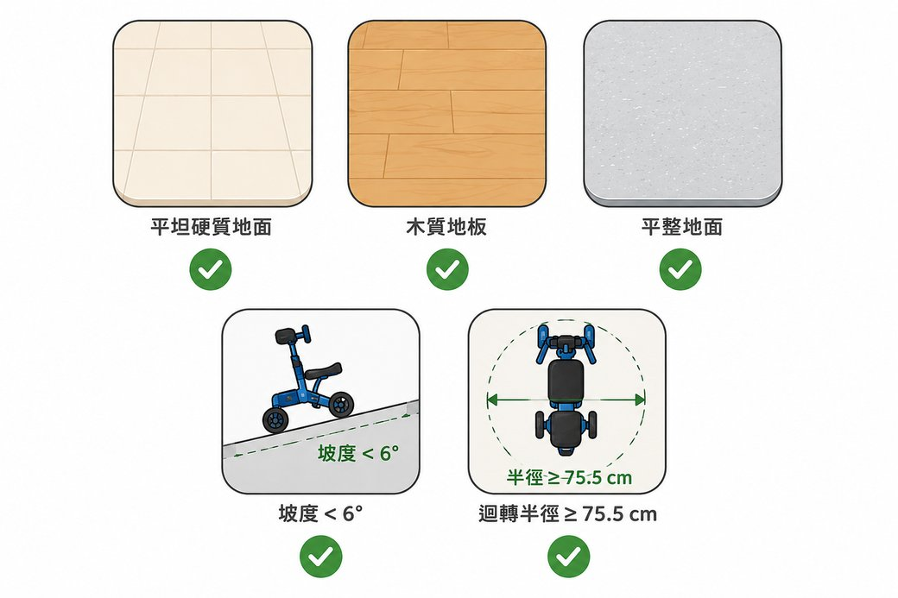
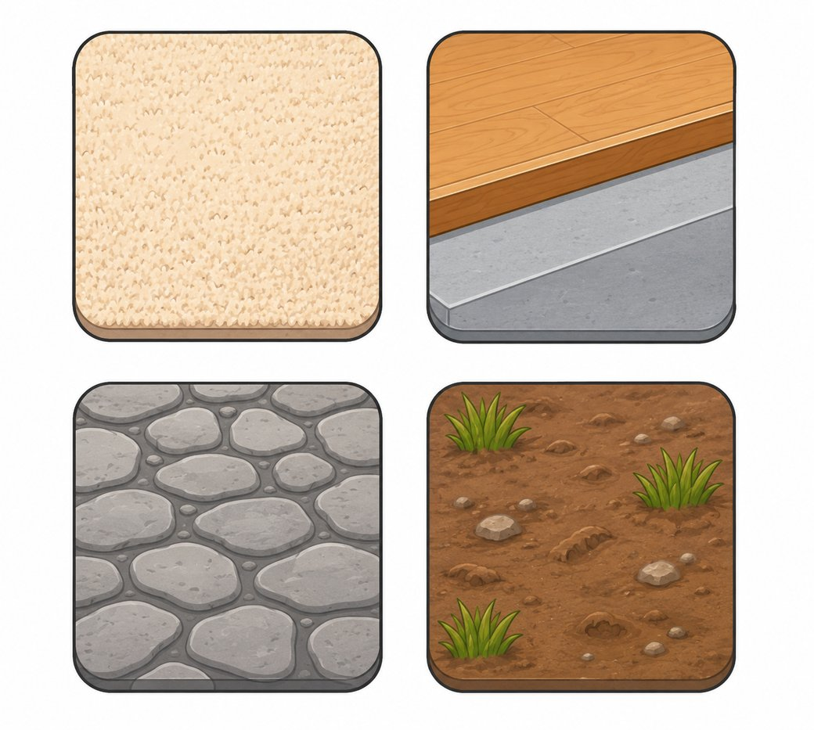
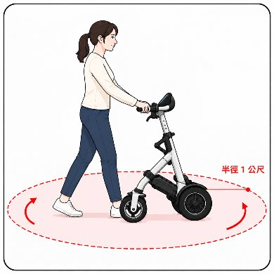
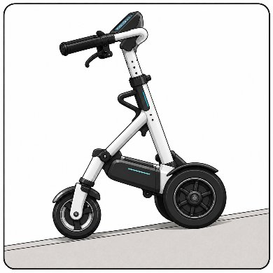
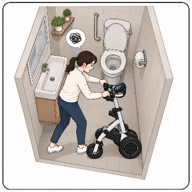
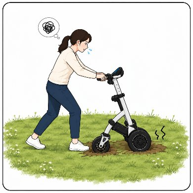

01、科技概述與定位
「智慧助行器」是一個統稱，泛指具備感測、警示或動力輔助等智慧功能的助行輔具，常見形式包括智慧手杖、智慧助步車等。本頁聚焦於其中一種形式：智慧助步車。這是一款電動輔助三輪助步車，體積與重量都大於傳統助行器，設計目的是輔助下肢肌力較弱或平衡能力較弱的使用者，於室內外進行日常步行與步態訓練。
為何與防跌相關
智慧助步車提供持續的身體支撐，並具備感測防跌機制，有助降低步態不穩或平衡能力較弱者的跌倒風險。
與傳統助行器的差異
智慧助步車體積較大、重量較沉，並具備感測、告警與步態分析等功能。導入前需額外考量空間動線與充電維護需求（詳見 04 節）。
由誰評估導入
建議由物理治療師或輔具評估人員，依個案下肢肌力與平衡能力評估後，決定是否適合使用。
由誰協助操作
照護人員或家屬陪同使用，尤其於初期使用階段，應留意設備防跌機制的反應狀況。
02、核心原理與防跌機制
智慧助步車以感測與訊號回饋機制，輔助使用者安全步行，並支援步態訓練的數據追蹤。
-
防跌感測機制
可針對步態不穩或行走速度較快的使用者，預先設定「防急衝煞車」與「偏移修正」的反應強度，降低失衡或偏離路線的風險。
-
告警通知機制
可與機構內部警示系統連線，例如照護端 App 或護理站燈號。偵測到防跌機制觸發或使用者離車異常時，即時通知照護人員。
-
步態分析與訓練回饋
可記錄兩腳承重比、步幅、步頻等步態數據，於訓練前後進行比對，協助個案與家屬了解訓練成效。
-
阻力與助力調整
可依復健進程調整車體阻力，用於肌力訓練；或調整助力，用於減輕關節負擔。
-
品牌、型號與認證資訊〔資訊缺口〕
本頁來源資料未提供具體品牌、型號、安全認證或價格資訊。如機構已採用特定機種，請另行查閱該機種的產品說明書。
03、適用對象與應用場景
適合使用對象
下肢肌力較弱者
站立或活動時腿部較無力，可透過設備提供支撐。
站立時需要支撐者
平衡能力較弱，活動時需要扶持或穩定支撐。
有下肢活動訓練需求者
例如帕金森氏症患者，因動作遲緩、肌力或平衡能力下降，而有站立及下肢活動訓練需求。
實際適用範圍應由物理治療師或輔具評估人員依個案狀況判斷，而非僅憑年齡或外觀活動能力主觀判斷。
三大應用場景
1. 日常步行與生活移位
- 個案篩選：適合下肢肌力尚可，但平衡感較差、易有步態不穩或跌倒恐懼的個案。
- 路徑規劃：優先規劃寢室至餐廳、公共活動區等主要動線，減少需要頻繁迴轉的狹窄路段。
- 陪同角色：照護人員隨行於側後方，觀察防跌機制的反應狀況，並避免拉扯車體。
2. 安全行走與防跌監測
- 感測器設定：依個案的步態特性，預先設定防急衝煞車與偏移修正的反應強度。
- 告警機制：確認設備已與機構內部警示系統連線，偵測異常時可即時通知照護人員（詳見 02 節）。
3. 復健與步態訓練
- 數據導向訓練：於訓練前後比對步態數據（兩腳承重比、步幅、步頻等），協助個案與家屬了解訓練成效。
- 阻力／助力調整：依復健進程調整車體阻力或助力，兼顧肌力訓練與關節保護需求。
04、空間與地面環境需求
導入前的場地條件檢核重點智慧助步車的體積與重量都大於傳統助行器。導入前須特別評估場地的通行寬度、地面材質與坡度條件。以下數值為一般規劃參考，實際規格請以採用機種的產品說明書為準。
| 項目 | 建議條件 |
|---|---|
| 走廊／通道淨寬 | 至少 120 公分。如需雙向交會或人員隨行陪伴，建議 150 公分以上。 |
| 迴轉空間 | 於走廊盡頭、電梯口等節點，預留約 150×150 公分的迴車空間。 |
| 地面高低差 | 門檻等高低差不宜超過 1 公分。地面應前後平整、無積水。 |
| 地面質地 | 避免高毛地毯、過軟軟墊等鬆軟表面。 |
| 坡度 | 不宜超過 1:12。行經斜坡路段前，須先測試設備的下坡煞車與上坡助力性能。 |
| 收納與充電區 | 設置固定停放與充電區，線材妥善收納避免絆倒，並保持通風良好。 |


以上圖示引用自使用者提供之機構內部試辦設計資料，用以標示空間與地面條件的參考類型，非特定機構之實景照片。
05、情境對照：有利與受限環境
四種常見使用情境示意以下情境摘自使用者提供的機構內部試辦設計資料，說明文字經簡化改寫，並保留原有的指導意義：

足夠的迴轉空間
操作前請確保周遭有充裕的轉彎與迴轉空間。實際所需半徑因個人身形、身高及車體規格而不同，請依實際使用情形調整。

坡度平緩的斜坡
請避免行駛於過陡之斜坡。若產品具備坡度限制，請依各機種手冊規範為準；建議以平緩斜坡為主，並隨時注意煞車與平衡。

空間狹小需倒車
於衛浴或走道等狹小空間操作時，可能因轉向或倒車不易而增加操作難度。進入前請先評估場域與設備之靈活性。

鬆軟地面導致推行阻力增加
草地、泥土或砂石等鬆軟地面，可能導致推行阻力增加或輪胎陷落。如需行駛於特殊路面，請放慢速度並提高警覺。
本指引之情境與數值（如角度、距離）僅供參考。實際操作請務必參閱您所使用之特定機種產品說明書。
06、導入前動線規劃示意
機構規劃智慧助步車的使用動線時，可參考以下三類分區概念，並依實際場地繪製專屬的樓層動線圖：
建議主動線
寬度符合需求且地面平整的行走路線，例如寢室至餐廳、公共活動區之間的主要通道。
迴轉與暫停點
走廊盡頭、電梯口等節點，標註約 150×150 公分的迴車空間。
受限區域
狹窄衛浴、階梯或有高低差的區域，建議標示為須改用傳統輔具或改由人工協助的區域。
以上分區概念整理自使用者提供之機構內部試辦設計資料。原始資料規劃以平面圖標示三色區域，惟涉及特定機構之樓層配置，本頁不代為繪製特定平面圖；建議各機構依 04 節之空間條件，自行繪製專屬動線圖。
07、機構實證設計參考
摘自使用者提供之試辦資料以下為一項機構在導入智慧助步車前設計的實證評估案例，部分內容為原始資料尚未完成之片段，已明確標示為資訊缺口，不代為杜撰：
〔資訊缺口〕原始試辦資料尚未提供具體成效指標與比較結果，待機構完成試辦後補充。
08、工作人員注意事項
- 場地已符合 04 節之空間與地面條件；狹窄或受限區域改用傳統輔具或人工協助。
- 個案已經物理治療師或輔具評估人員評估，確認下肢肌力與平衡能力適合使用。
- 設備防跌機制（防急衝煞車、偏移修正）已依個案狀況完成設定。
- 照護人員隨行於側後方，觀察設備反應，並避免拉扯車體。
- 留意告警通知是否正常送達（App 或護理站燈號），並定期測試連線狀態。
- 使用後將設備歸位至固定停放與充電區，檢查線材是否妥善收納。